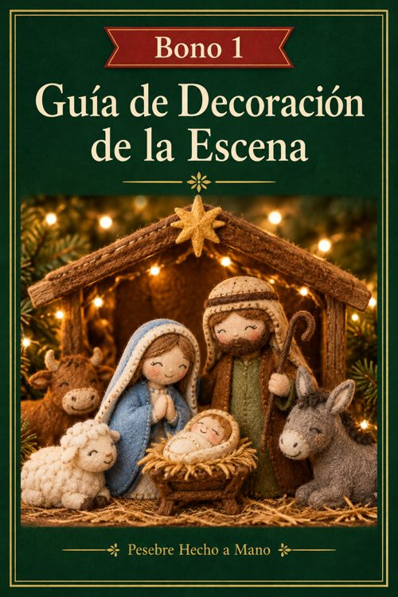
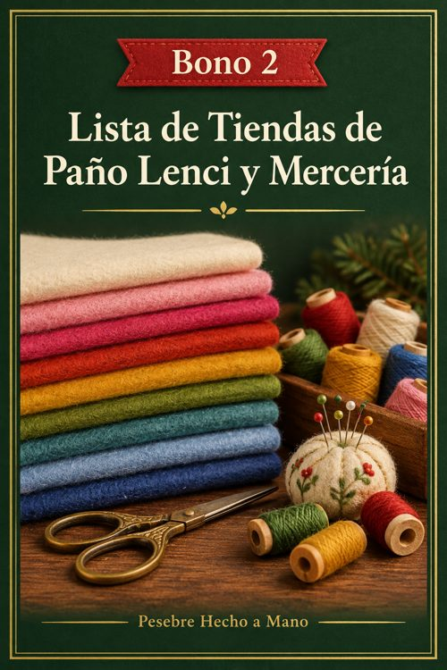
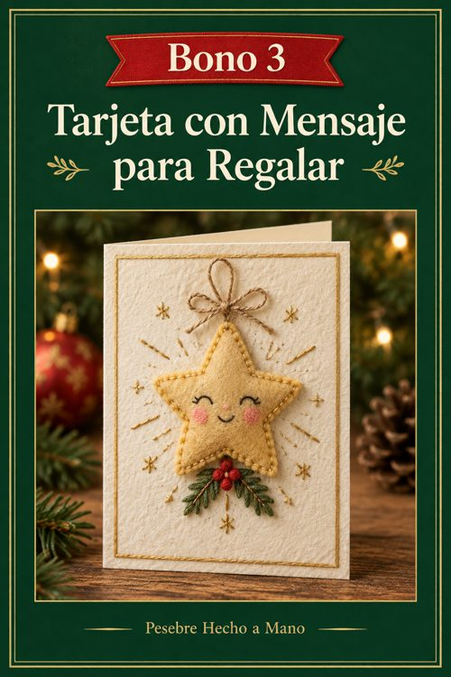
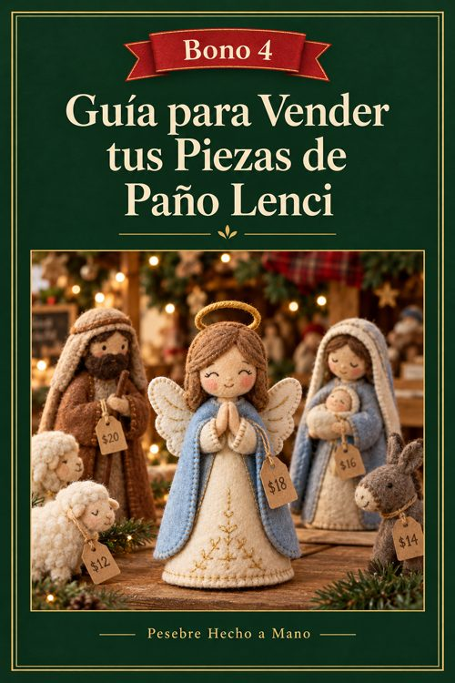
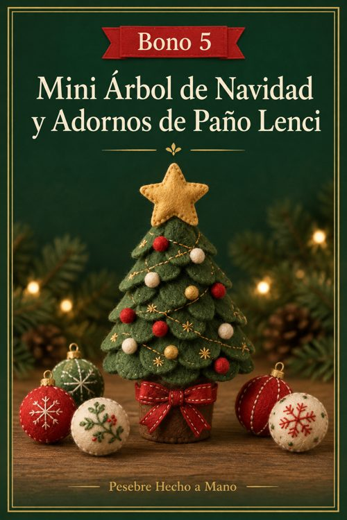
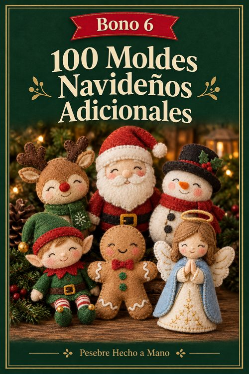

Tu colección
Tus 6 bonos de regalo

Bono 1Guía de decoración de la escena
Iluminación, base y armado para que tu pesebre quede de vidriera.
Abrir · 9 páginas →
Bono 2Lista de tiendas de paño lenci y mercería
Tiendas online de Argentina para comprar los materiales.
Abrir · 7 páginas →
Bono 3Tarjeta con mensaje para regalar
Tarjetas para imprimir y regalar tu pesebre terminado.
Abrir · 5 páginas →
Bono 4Guía para vender tus piezas de paño lenci
Precio, dónde vender, fotos y textos listos.
Abrir · 9 páginas →
Bono 5Mini árbol de Navidad y adornos de paño lenci
4 moldes extra: arbolito, bolitas, moño y estrella.
Abrir · 10 páginas →
Bono especial100 moldes navideños adicionales
Papá Noel, renos, muñecos de nieve, duendes y mucho más.
Abrir · 29 páginas →Por dónde empezar
- Leé las páginas 2 a 23 del libro: técnicas, materiales y plan de trabajo hasta el 8 de diciembre.
- Comprá los materiales con la lista general (página 17) y las tiendas del Bono 2.
- Empezá por una pieza fácil: la Estrella (proyecto 14) o el Niño Jesús (proyecto 4).
- Imprimí los moldes en A4 al 100 %, sin «ajustar a la página».
Para uso personal. Prohibida la reventa o redistribución de los archivos.